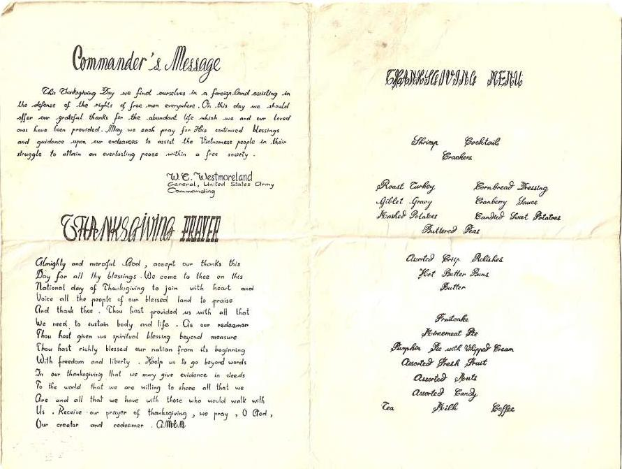

BACK
Thanksgiving Day Vietnam
Contributed by Chuck Kline

|
Commander's Message This Thanksgiving Day we find ourselves in a foreign land assisting in the defense of the rights of free men everywhere. On this day we should offer our grateful thanks for the abundant life which we and our loved ones have been provided. May we each pray for His continued blessings and guidance upon our endeavors to assist the Vietnamese people in their struggle to attain an everlasting peace within a free society. W.C. Westmoreland |
Thanksgiving Menu
Shrimp Cocktails Roast Turkey Cornbread Dressing Assorted Crisp Relishes Fruitcake Tea Milk Coffee |
|
Thanksgiving Prayer Almighty and merciful God, accept our thanks this Day for all thy blessings. We come to Thee on this National day of Thanksgiving to join with heart and voice all the people of our blessed land to praise and thank Thee. Thou hast provided us with all that we need to sustain body and life. As our redeemer Thou hast given us spiritual blessing beyond measure. Thou hast richly blessed our nation from its beginning with freedom and liberty. Help us to go beyond words in our thanksgiving that we may give evidence in deeds to the world that we are willing to share all that we are and all that we have with those who would walk with us. Receive our prayer of thanksgiving, we pray, O God, Our creator and redeemer. AMEN |